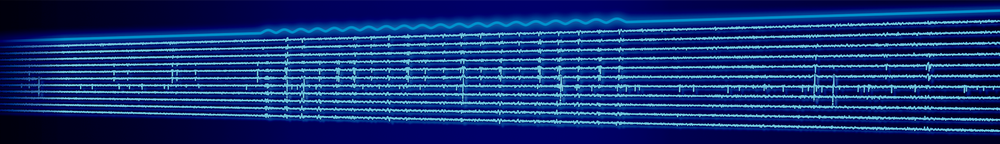

PhD student position
The Visual Circuits & Interfaces group at the German Primate Center (DPZ) in Göttingen is seeking a PhD student for a project on optogenetic stimulation of the visual cortex to generate artificial visual perception for vision restoration.
The project is part of the Else Kröner Fresenius Center (EKFZ) for Optogenetic Therapies, a collaborative research center dedicated to developing optogenetic therapies for clinical use, and is associated with the University Medical Center Göttingen (UMG).
The Project
This project will investigate how optogenetic stimulation of visual cortical circuits can evoke visual percepts. The work will include optogenetic and electrical stimulation, large-scale neural recordings with Neuropixels and ECoG, and behavioral experiments in non-human primates (marmosets).
A central aim is to determine how stimulation of cortical circuits can reproduce visual percepts that resemble those evoked by natural vision.
Your Profile
Master’s degree, equivalent degree, or close to completion, in a relevant field such as neuroscience, physics, biology, medicine, engineering, psychology, or another relevant field.
Experience or strong interest in
- Neural circuits and visual perception
- Electrophysiology
- Optogenetics
- Systems neuroscience
- Data analysis / programming, for example MATLAB or Python; some experience required
We Offer
Funding
Full funding for a 3-year PhD position (TV-L E13 65%).
Environment
A highly interdisciplinary environment at the interface of neuroscience and neurotechnology.
Experimental tools
Access to state-of-the-art experimental tools for systems neuroscience and optogenetics.
Community
Integration into the Göttingen neuroscience community.
How to apply
Please send:
- CV and academic transcripts
- Short motivation letter
- Contact information for references
Website: Visual Circuits & Interfaces